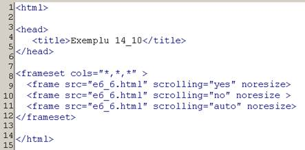
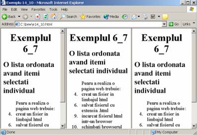
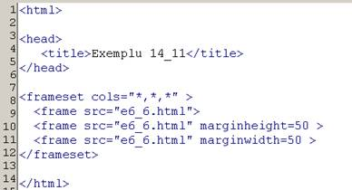
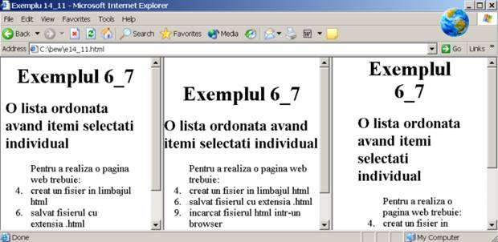
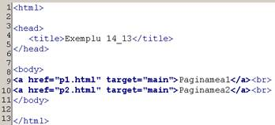
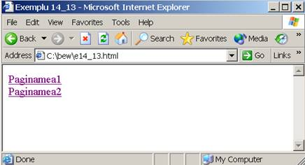
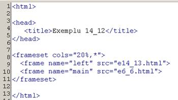
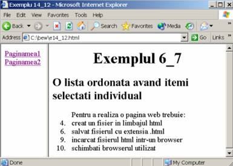
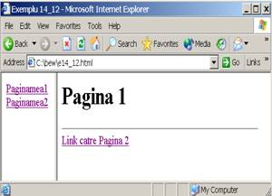
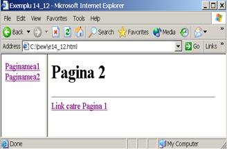

Scrollbar in HTML
Bare de defilare
Atributul scrolling al etichetei este utilizat pentru a adauga unui cadru o bara de derulare care permite navigarea in interiorul documentului afisat in interiorul cadrului.
Valorile posibile sunt:
"yes" - barele de derulare sunt adaugate intotdeauna;
"no" - barele de derulare nu sunt utilizabile;
"auto" - barele de derulare sunt vizibile atunci cand este necesar
Atributul noresize al etichetei (fara nici o valoare suplimentara) daca este prezent, inhiba posibilitatea prestabilita a utilizatorului de a redimensiona cadrul cu ajutorul mouse-ului.


Poziţionarea documentului intr-un cadru
Atributele marginheight si marginwidth ale etichetei permit stabilirea distanţei in pixeli dintre conţinutul unui cadru si marginile verticale, respectiv orizontale ale cadrului.
Valori posibile:
- numar de pixeli;
- procent din laţimea, respectiv din inalţimea cadrului;


Tinte pentru legaturi
In mod prestabilit, la efectuarea unui clic pe o legatura, noua pagina (catre care indica legatura) o inlocuieste pe cea curenta in aceeasi fereastra (acelasi cadru). Acest comportament se poate schimba in doua moduri:
prin plasarea in blocul a unui element care precizeaza, prin atributul target numele ferestrei (cadrului) in care se vor incarca toate paginile noi referite de legaturile din pagina curenta conform sintaxei:
;
prin plasarea in eticheta a atributului target, care precizeaza numele ferestrei (cadrului) in care se va incarca pagina nou referita de legatura, conform sintaxei:
.




Facand clic pe primul textul subliniat apare:

Facand clic pe al doilea text subliniat apare:
